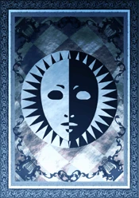

Makoto Yuki O Lider da SEES
Makoto Yuki: é um estudante transferido para a Gekkoukan High School, mas ele não é um aluno comum. Desde o primeiro dia, ele demonstra uma calma quase inabalável diante do desconhecido. Quando a misteriosa Dark Hour se revela — um período oculto no tempo onde apenas alguns podem se mover e criaturas chamadas Shadows atacam os despreparados — ele não hesita. Diferente de outros membros da S.E.E.S, Makoto tem um poder único: a Wild Card, permitindo que ele utilize múltiplas Personas, espíritos poderosos que representam seu verdadeiro eu. Seu vínculo com Orpheus, sua primeira Persona, marca o início de sua jornada para desvendar os segredos da Dark Hour e do misterioso Tártaro, a torre que surge à meia-noite. Apesar de sua expressão quase sempre serena, há algo de enigmático nele. Ele se adapta facilmente ao seu novo papel, mas por trás de seus olhos tranquilos há um passado desconhecido e um destino que o aguarda. Conforme se aproxima de seus amigos e fortalece seus laços através dos Social Links, ele não apenas se torna mais forte — mas também se torna uma figura essencial para a sobrevivência de todos ao seu redor. Makoto Yuki não é apenas um líder. Ele é o pilar da SEES, aquele que carrega o peso do desconhecido e segue em frente, não importa o que o aguarde no fim da jornada.
Persona: principal: Orpheus, e mais outras...
Idade: 17 anos
Equipamento: Espada
Aigis A Máquina com um Coração Humano
Aigis: Dentre todos os membros da SEES, nenhum é tão enigmático quanto Aigis. À primeira vista, ela pode parecer apenas uma máquina – uma unidade de combate avançada criada para destruir as Shadows. Mas Aigis é muito mais do que isso. Ela não apenas luta ao lado da equipe, como também está em busca de algo que nem mesmo seus criadores poderiam prever: uma alma humana. Criada pelo Grupo Kirijo, Aigis é um Anti-Shadow Suppression Weapon, projetada especificamente para lidar com a Dark Hour e os perigos que ela traz. Seu corpo mecânico é equipado com um vasto arsenal de armas, desde metralhadoras embutidas até lançadores de mísseis, tornando-a uma combatente excepcional. Sua Persona inicial, Palladion, e sua evolução, Athena, concedem a ela habilidades de físico e suporte, permitindo que ela seja tanto um tanque defensivo quanto uma fonte de dano massivo. Mas, apesar de toda sua força, Aigis sente que lhe falta algo essencial: emoções humanas. Quando ela encontra o protagonista, um estranho senso de familiaridade desperta dentro dela, como se um elo invisível os conectasse. A partir desse momento, sua missão se torna algo muito maior do que apenas eliminar Shadows – ela quer entender o que significa viver, sentir e ser verdadeiramente humana. Fora das batalhas, Aigis muitas vezes parece robótica e literal demais, interpretando tudo de maneira direta e tendo dificuldades com expressões emocionais. No entanto, conforme o tempo passa, ela começa a desenvolver sua própria identidade, aprendendo com os outros membros da SEES e formando laços que desafiam sua natureza artificial. No final das contas, Aigis não é apenas uma máquina de combate – ela é uma guerreira em busca de um propósito maior. E talvez, ao lado de seus amigos, ela possa descobrir o verdadeiro significado de existir.
Persona: Athena
Idade: ????
Equipamento: Ela mesma é uma arma
A sombra do que fomos… ou algo além?
Metis: No início, tudo nela parecia errado. Uma presença fria, mecânica, mas ao mesmo tempo... familiar. Ela veio até nós não como uma aliada, mas como uma inimiga – determinada a levar Aigis, a única que ainda carregava o fardo do que aconteceu naquela noite. Ela lutava como nós, usava uma Persona como nós, mas… ela não era como nós. Ela se chamava de "irmã" de Aigis. Mas como isso era possível? De onde ela veio? Qual era o seu verdadeiro propósito? No fundo, Metis era mais do que uma adversária. Ela era uma verdade que ainda não havíamos enfrentado. Uma manifestação dos sentimentos que tentamos enterrar, da dor que tentamos esquecer. Ela era um reflexo da própria Aigis, uma prova de que o passado não pode simplesmente ser apagado. No fim, percebemos que não era ela quem nos ameaçava... mas o que estávamos nos tornando sem aqueles que perdemos. E assim, a questionamos. Lutamos. Aceitamos Porque, se Metis nos ensinou algo, foi que nem mesmo uma máquina pode ignorar o peso do coração.
Persona:Psyche
Idade: ????
Equipamento: Martelo grande

Yukari Takeba A Atiradora da SEES
Yukari takeba Se tem alguém que fala o que pensa na SEES, essa pessoa é Yukari Takeba. Ela é uma estudante da Gekkoukan High School, uma das primeiras a te receber quando você chega, e também uma das primeiras a te arrastar para a realidade sombria da Dark Hour. Mas Yukari não é só mais uma colega de equipe – ela tem uma razão pessoal para estar nessa luta. O passado dela está diretamente ligado ao mistério por trás da Dark Hour. Seu pai, um cientista da Kirijo Group, morreu anos atrás em um acidente misterioso, e Yukari cresceu carregando dúvidas e ressentimentos sobre o que realmente aconteceu. Talvez seja por isso que ela tem tanta dificuldade em confiar nos outros. No campo de batalha, Yukari empunha um arco e é especialista em magias de Vento e cura. Sua Persona inicial, Io, e sua evolução, Isis, fazem dela uma peça fundamental da equipe, garantindo que ninguém caia em combate. Mas se você acha que ela vai simplesmente seguir ordens sem questionar, pense de novo – Yukari não tem medo de falar quando algo parece errado, seja com você, com Mitsuru ou qualquer um. Fora das batalhas, ela tem um jeito extrovertido e brincalhão, mas também esconde inseguranças profundas. Conforme você se aproxima dela, percebe que sua desconfiança inicial é apenas um escudo. No fundo, ela só quer encontrar a verdade e proteger aqueles com quem se importa. Seja como uma amiga leal ou algo mais, Yukari Takeba é alguém que você não pode ignorar. Ela é o coração e a razão da SEES – e vai garantir que você nunca esqueça por que essa luta importa.
Persona:Ísis
Idade: 16 anos
Equipamento: Arco e Flecha

Junpei Iori O Palhaço de Bom Coração da SEES
Junpei Iori: Se tem alguém que sempre tenta manter o clima leve na SEES, esse alguém é Junpei Iori. Ele é o típico cara que chega com um sorriso no rosto e uma piada pronta, tentando animar todo mundo – mesmo quando a situação está desmoronando. Mas não se engane, por trás da fachada brincalhona, Junpei tem seus próprios conflitos e inseguranças. Estudante da Gekkoukan High School, ele entra para a SEES pouco depois do protagonista, animado com a ideia de ser um herói e enfrentar as Shadows. Para ele, essa é a chance de sair da sombra de uma vida medíocre e finalmente se tornar alguém especial. No entanto, sua autoimagem sofre um grande impacto quando percebe que não é o protagonista da história – e isso mexe profundamente com ele. No campo de batalha, Junpei empunha uma espada de duas mãos, trazendo ataques físicos poderosos para o time. Sua Persona inicial, Hermes, e sua evolução, Trismegistus, lhe concedem afinidade com magias de Fogo, além de habilidades de suporte. Ele pode não ser o mais estratégico, mas compensa com sua determinação e resistência. Junpei tem uma personalidade expansiva e tende a agir antes de pensar, o que muitas vezes o coloca em situações embaraçosas. Ele também pode ser competitivo, especialmente com o protagonista, mas com o tempo aprende a aceitar seu próprio valor, independente de estar ou não no centro das atenções. Apesar de todas as brincadeiras e atitudes impulsivas, Junpei é um amigo leal e confiável. Quando as coisas ficam difíceis, ele está lá para ajudar – mesmo que faça uma piada logo depois. Ele pode não ser o herói da história, mas, no fim das contas, ser um bom amigo já é heroico o suficiente.
Persona: Trismegisto
Idade: 17 anos
Equipamento: Espada Longa

Shinjiro Aragaki O Guerreiro Marcado pelo Passado
Shinjiro Aragaki: Se tem alguém que prefere ficar longe dos holofotes na SEES, esse alguém é Shinjiro Aragaki. Ele não é o tipo de pessoa que gosta de conversas longas ou de seguir ordens – na verdade, ele nem deveria estar aqui. Mas, quando as coisas ficam realmente difíceis, ele sempre aparece, pronto para lutar. Shinjiro foi um dos membros fundadores da SEES, ao lado de Akihiko Sanada e Mitsuru Kirijo. Mas algo aconteceu no passado, algo que ele nunca fala abertamente – e foi isso que o fez abandonar tudo e seguir seu próprio caminho. Agora, ele leva uma vida solitária, lidando com suas próprias dores e tentando fugir da culpa que carrega. Mesmo assim, quando a SEES precisa dele, ele volta. Armadura pesada, mãos nos bolsos, olhar cansado. Ele pode até fingir que não se importa, mas no fundo, ele se importa mais do que ninguém. No campo de batalha, Shinjiro é um verdadeiro tanque. Ele empunha pesados martelos e machados, esmagando qualquer Shadow que se atreva a cruzar seu caminho. Sua Persona, Castor, reflete sua força bruta e sua determinação, focando em ataques físicos destrutivos que podem acabar com inimigos rapidamente. No entanto, ele não tem resistência a longo prazo – uma metáfora cruel para seu próprio destino. Shinjiro não é alguém fácil de se aproximar. Ele mantém distância, fala pouco e muitas vezes parece rude. Mas para aqueles que conseguem quebrar sua barreira, ele se mostra um amigo incrivelmente leal e alguém que carrega mais dor do que deixa transparecer. No fim, Shinjiro Aragaki é um homem tentando acertar as contas com seu passado – e, talvez, encontrar um pouco de redenção no meio do caos.
Persona: Rícino
Idade: 18 anos
Equipamento: Martelo Longo

Akihiko Sanada O Lutador Indomável da SEES:
Akihiko Sanada: Se existe alguém que nunca foge de uma luta, esse alguém é Akihiko Sanada. Membro veterano da SEES, ele é o tipo de pessoa que encara cada desafio como uma nova oportunidade para crescer. Sempre calmo, focado e disciplinado, Akihiko vive para se tornar mais forte – não apenas para si mesmo, mas para proteger aqueles ao seu redor. Desde cedo, Akihiko teve que aprender a se virar sozinho. Órfão desde criança, ele cresceu ao lado de sua irmã mais nova, Miki, e seu melhor amigo, Shinjiro Aragaki. Mas perder Miki em um incêndio o marcou profundamente, deixando uma cicatriz invisível que o impulsionou a nunca mais ser fraco. Esse desejo de se fortalecer o levou ao boxe e, mais tarde, à SEES, onde ele luta não apenas contra as Shadows, mas contra seus próprios limites. No campo de batalha, Akihiko é um especialista em combate corpo a corpo, usando seus punhos para destruir inimigos com ataques rápidos e precisos. Sua Persona inicial, Polydeuces, e sua evolução, Caesar, concedem a ele habilidades Elétricas e de suporte, tornando-o um lutador versátil que pode tanto atacar quanto fortalecer a equipe. Fora das batalhas, Akihiko pode parecer sério e focado demais, sempre treinando e buscando se superar. Mas, apesar de sua personalidade determinada, ele tem um lado descontraído e até meio ingênuo quando o assunto foge do ringue – algo que seus amigos não perdem a chance de provocar. Ele também é incrivelmente protetor, especialmente com Mitsuru Kirijo e Shinjiro, carregando um forte senso de responsabilidade por aqueles que considera família. Akihiko Sanada não luta apenas para ficar mais forte. Ele luta porque acredita que é seu dever proteger aqueles que não podem se proteger sozinhos. E enquanto houver uma batalha a ser travada, ele estará lá – com os punhos erguidos e um olhar determinado, pronto para enfrentar qualquer desafio.
Persona: César
Idade: 18 anos
Equipamento: Punhos
Mitsuru Kirijo A Rainha do Gelo e Ex-Líder da SEES
Mitsuru Kirijo: Se existe alguém que comanda a SEES com elegância e autoridade, esse alguém é Mitsuru Kirijo. Inteligente, disciplinada e dotada de uma presença imponente, ela não é apenas uma líder – ela é o pilar que mantém o time unido. Filha do poderoso Grupo Kirijo, Mitsuru carrega sobre os ombros o peso de sua linhagem e de um passado que a assombra mais do que deixa transparecer. Desde cedo, Mitsuru foi treinada para assumir a responsabilidade de sua família e enfrentar os segredos sombrios que eles esconderam do mundo. Como uma das primeiras pessoas a despertar para o Poder da Persona, ela fundou a SEES com o objetivo de corrigir os erros do passado e acabar com a ameaça da Dark Hour de uma vez por todas. No campo de batalha, Mitsuru luta com espadas, unindo precisão e sofisticação em cada golpe. Sua Persona inicial, Penthesilea, e sua evolução, Artemisia, a tornam uma especialista em habilidades de Gelo, além de contar com feitiços de status que podem incapacitar seus inimigos. Sua mente afiada também se reflete no combate, onde ela assume o papel de estrategista, garantindo que a equipe sempre tenha a vantagem. de sua postura imponente, Mitsuru não é apenas uma líder rígida. Com o tempo, ela aprende a relaxar e a se permitir momentos de vulnerabilidade. Seu senso de dever muitas vezes a impede de se abrir, mas aqueles que ganham sua confiança descobrem uma mulher profundamente leal, com um coração que se preocupa mais com seus amigos do que ela mesma admite. Mitsuru Kirijo não luta apenas por obrigação – ela luta por redenção, por justiça e pelo futuro daqueles que ama. E enquanto houver uma batalha para travar, ela continuará avançando, determinada a proteger aqueles que confiam nela.
Persona:Artemísia/p>
Idade: 18 anos
Equipamento: Espada
Fuuka Yamagishi – A Voz que Guia a SEES
Fuuka Yamagishi: Dentre todos os membros da SEES, Fuuka Yamagishi é a que menos se parece com uma lutadora. Frágil e tímida à primeira vista, ela não empunha espadas ou dispara feitiços poderosos. Mas não se engane: sem ela, a equipe estaria perdida. Antes de se juntar à SEES, Fuuka era uma aluna reservada e frequentemente alvo de bullying. Sua natureza gentil e introvertida a fazia passar despercebida, até que um evento traumático a prendeu dentro do Tártaro, forçando-a a despertar para o poder de sua Persona, Lucia. Desde então, ela se tornou o coração da equipe – não lutando diretamente, mas guiando seus aliados através da escuridão. Fuuka é a navegadora da SEES, fornecendo suporte tático em tempo real. Sua Persona lhe concede habilidades de análise e rastreamento, permitindo que ela revele fraquezas inimigas, localize aliados em perigo e forneça buffs essenciais. Com o tempo, sua Persona evolui para Juno, ampliando ainda mais seu poder e precisão. Fora das batalhas, Fuuka é uma amiga gentil e atenciosa, sempre disposta a ajudar aqueles ao seu redor. No entanto, sua insegurança a faz duvidar de seu próprio valor, acreditando que nunca é forte o suficiente. Mas, à medida que a jornada avança, ela aprende que a força não vem apenas do combate – vem do apoio, da empatia e da conexão com aqueles que escolhemos proteger. No final, Fuuka pode não ser a guerreira mais forte, mas sua presença é indispensável. Ela é a voz que guia seus amigos pela escuridão – e a luz que nunca os deixa sozinhos.
Persona:Juno
Idade: 17 anos
Equipamento: Nenhuma

Ken Amada O Jovem Guerreiro
Ken Amada: Na SEES, há quem lute para proteger, há quem lute para descobrir a verdade, e há quem lute para escapar do próprio passado. Ken Amada luta por Apesar de ser o mais jovem do grupo, Ken não é um simples espectador na batalha contra as Shadows a qualquer custo . No combate, Ken se destaca por sua velocidade e precisão. Empunhando uma lança, Persona inicial, Nemesis, Kala-Nemi, ele concede Elétricas (Zio) e de Luz (Hama), o seu desejo de vingança que pode levá-lo a um caminho sem volta . Fora da batalha, Ken tenta agir de forma madura, educada e responsável, como se quisesse provar que pode lidar com tudo sozinho. No entanto, por trás de sua postura controlada, ele ainda é uma criança lidando com emoções muito maiores do que consegue suportar. O medo, a raiva e a tristeza o consomem em silêncio, e seu desejo de vingança pode cegá-lo para o verdadeiro significado de força Ken Amada não luta apenas contra as Shadows ele luta contra si mesmo .
Persona:Kala-Nemi
Idade: 11 anos
Equipamento: Lança
Koromaru O Guardião Leal da SEES
Koromaru: Nem todo guerreiro precisa empunhar uma espada. Alguns lutam com garras afiadas, lealdade inquebrantável e um coração mais forte do que o de muitos humanos . Esse é Koromaru , o membro mais inesperado – e talvez o mais corajoso – da SEES . Antes de se juntar ao tempo, Koromaru era apenas um cão vivendo ao lado de seu dono, um monge cego que cuidava de um santuário. Mas o destino foi cruel: um incidente com as Shadows tirou a vida de seu companheiro, deixando Koromaru sozinho. No entanto, em vez de fugir, ele apareceu, vigiando o local todas as noites, enfrentando Sombras sozinho para proteger a memória de quem amava. Esse espírito inabalável fez dele um dos poucos animais capazes de despertar uma Pessoa . Sua Persona inicial, Cerberus , simboliza sua coragem e lealdade inquestionáveis. No combate, Koromaru é rápido e ágil, utilizando habilidades de Fogo (Agi) e Escuridão (Mudo) para dizimar inimigos antes que possam reagir. Apesar de não falar, seu vínculo com a equipe é profundo, e ele sempre parece entender o que seus companheiros precisam, seja conforto em momentos difíceis ou força no calor da batalha. Koromaru pode não ser humano, mas seu espírito guerreiro é maior do que o de muitos. Para ele, lutar não é uma questão de obrigações – é um ato de amor, proteção e liderança eterna àqueles que chamam de família . E enquanto houver batalhas a serem travadas, Koromaru nunca se recuperará.
Persona:Cérbero
Idade: ????
Equipamento: Faca
Inimigos da

Takaya Sakaki O Profeta do Fim
Takaya Sakaki: Em meio ao caos da Dark Hour , onde a SEES luta para impedir a chegada do fim do mundo, Takaya Sakaki se ergue como uma voz sedutora e perigosa, proclamando que o destino da humanidade já está selado. Líder do grupo Strega , ele não apenas aceita o apocalipse iminente – ele o abraça , acreditando que a destruição é o único caminho verdadeiro. Takaya não é um inimigo comum. Ele não luta por vingança, poder ou glória. Para ele, a vida é uma ilusão passageira, e a única verdade absoluta é a morte . Como sobrevivente dos experimentos do Grupo Kirijo , que o forçaram a despertar sua Persona, Hypnos , Takaya desenvolveu uma visão distorcida do mundo. Ele vê sua dor e sofrimento como uma prova de que a humanidade não merece salvação, apenas o descanso eterno. Embora não tenha participado das batalhas como os membros da SEES, Takaya é um adversário formidável. Ele empunha um revólver e não hesita em matar aqueles que consideram obstáculos ao "grande destino" que aguarda a todos . Sua Persona, Hypnos , o Deus do Sono, reflete sua capacidade de manipular e convencer os outros a aceitarem o resultado. Suas palavras são tão letais quanto suas balas – ele não precisa forçar ninguém a segui-lo, pois seus ideais extremistas seduzem aqueles que perderam toda a esperança . Takaya é um homem de fé – mas sua fé reside na aniquilação. Para ele, a luta da SEES é fútil, um esforço desesperado para atrasar o que já está escrito. Ele não teme a morte, pois acredita que o fim é a verdadeira libertação. Mas será que ele realmente acredita em tudo que prega? Ou, no fundo, Takaya Sakaki é apenas mais uma alma quebrada, tentando dar um propósito ao próprio sofrimento?
Persona:Hypnos
Idade: ????
Equipamento: Revolver
Chidori Yoshino A Rosa com Espinhos da Strega
Yoshino Chidori:Envolta em silêncio e mistério, Chidori Yoshino é uma guerreira fria e distante, mas por trás de sua aparência serena, existe uma alma atormentada por sentimentos que ela não consegue compreender. Como membro da Strega, Chidori luta ao lado de Takaya e Jin, mas, diferente deles, não busca o fim do mundo – apenas uma razão para existir. Desde cedo, Chidori demonstrou habilidades únicas, especialmente sua capacidade de usar sangue para potencializar sua Persona, Medea. O sacrifício físico se tornou parte de sua identidade, um reflexo de sua mentalidade autodestrutiva. Para ela, dor e vida são indissociáveis, e sua conexão com os outros sempre foi fria e superficial... até conhecer Junpei Iori. Ao contrário de Takaya, que acredita no destino do apocalipse, e Jin, que segue a lógica implacável, Chidori é uma alma perdida, alguém que nunca soube o que significa ser verdadeiramente viva. Mas Junpei, com seu jeito desajeitado e otimista, desafia essa visão, mostrando a ela um mundo além da dor e da batalha. Pela primeira vez, Chidori sente algo que nunca havia experimentado: amor, medo, desejo de proteger – emoções que sua lealdade à Strega não consegue apagar. No campo de batalha, Chidori é uma inimiga feroz, usando sua Persona para ataques de Fogo (Agi) e suporte, além de sua habilidade única de auto-regeneração através do próprio sofrimento. Seu estilo de luta reflete sua própria visão da vida – intensa, arriscada e sem medo das consequências. No final, Chidori Yoshino não é apenas uma antagonista, mas um coração em conflito, dividido entre um passado de dor e a possibilidade de um futuro diferente. E a grande questão é: quando o momento chegar, ela terá coragem de escolher a vida?
Persona: Medeia
Idade: ????
Equipamento: Machado acorrentado
Jin Shirato O Cálculo Frio da Strega
Jin Shirato: Na guerra contra as Shadows, nem todos lutam com força bruta ou pura fé. Alguns preferem o controle, a lógica e a estratégia para alcançar seus objetivos. Jin Shirato é esse tipo de homem – um gênio da tecnologia, um mestre da manipulação e o cérebro por trás das operações da Strega. Ao contrário de Takaya, que vê o apocalipse como algo sagrado, e de Chidori, que busca um significado para sua existência, Jin acredita apenas nos fatos e na eficiência. Ele não se importa com sentimentalismos ou ideais grandiosos – para ele, o mundo é um jogo de xadrez, e ele sempre joga para vencer. Frio e calculista, Jin é responsável por coletar informações, hackear sistemas e garantir que a Strega esteja sempre um passo à frente da SEES e da Kirijo Group. Seu conhecimento em tecnologia e táticas de guerrilha o tornam um inimigo formidável, capaz de manipular situações para que sempre terminem a favor de sua facção. No combate, ele utiliza granadas e explosivos, um reflexo de sua abordagem prática e letal – não há necessidade de uma luta prolongada quando um único movimento pode garantir a vitória. Sua Persona, Moros, representa a inevitabilidade do destino e o conhecimento do que está por vir. Ele não se deixa levar por emoções ou impulsos; cada ação sua é calculada com precisão cirúrgica. Apesar de seu exterior rígido, Jin é profundamente leal a Takaya. Embora diga que segue a Strega por pura lógica, é possível que, no fundo, veja Takaya como alguém que deu a ele um propósito. Mesmo assim, ele nunca hesitaria em fazer o que for necessário para alcançar seus objetivos, por mais cruel que seja. Jin Shirato não luta por um mundo melhor – ele luta para garantir que seu lado vença. Para ele, perder não é uma opção.
Persona: Moros
Idade: ????
Equipamento:Granadas
Avatar de Nyx

"Aquele que trará o fim... o inevitável. A personificação da Morte."
Pharos ou Ryoji Mochizuki: Por muito tempo, ele esteve ao nosso lado, sussurrando promessas em meio à escuridão, aparecendo quando a noite era mais densa. Primeiro como Pharos, um garoto misterioso de olhos brilhantes e palavras enigmáticas, sempre nos lembrando que algo aguardava no horizonte. Depois, como Ryoji Mochizuki, um jovem cheio de vida, carismático e amigável... mas que, no fundo, carregava o peso de um destino que ninguém poderia mudar. Mas a verdade sempre esteve lá. Ele não é apenas um amigo ou um presságio. Ele é o arauto do fim. Nyx. Não um inimigo que podemos derrotar. Não um ser que podemos superar. Nyx não é um monstro, não é um deus. Nyx é o destino final, o sono eterno que aguarda toda a existência. Não importa o quanto lutemos, o quanto resistamos – ela não pode ser parada, pois não se pode matar aquilo que já representa a própria morte. Ryoji, no final, nos deu uma escolha. Aceitar a verdade e esquecer, viver nossos últimos dias em ignorância... ou encarar o impossível, lutar contra algo que não pode ser vencido. E aqui estamos nós. Com medo. Com dúvida. Mas também com esperança. Porque se a morte é inevitável, então o que realmente importa é como vivemos antes de encontrá-la. E se o destino quer que nos ajoelhemos diante dele, então vamos lutar até o último suspiro para provar que estamos vivos.